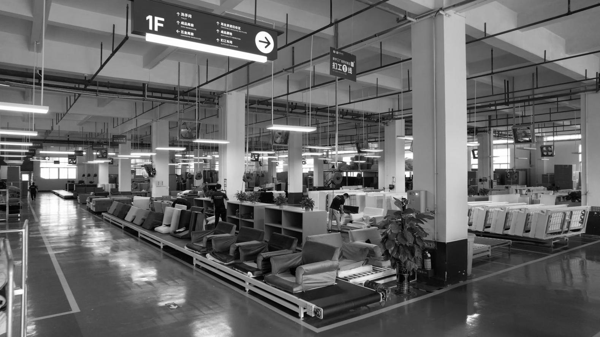

让每一件家具，都回到生活本身
萨玛尼家具 · 梵窝 VANVO，以自然材质与手工温度回应当代生活。
2001
萨玛尼画册工艺标记2002
VANVO 画册记载成立20 余年
精品软体家具设计制造4 大系列
从客厅到卧室的生活表达
Our Story
二十余年，只为坐下时的舒适
品牌画册以 Since 2001 记录工艺初心，梵窝 VANVO 品牌介绍记载萨玛尼家具于 2002 年成立。二十余年来，始终专注高档精品软体家具的设计、生产与销售。
我们相信，出色的家具无需过度表达。天然材料的肌理、经过推敲的比例，以及由手工完成的细节，让简约的外形拥有丰富而真实的触感。
从沙发系统到单椅、床具与茶几，我们以舒适为共同语言，让每一个空间保留属于居住者的性格。
Brand Journey
时间留下的，是对舒适的坚持
2001 · 工艺初心
萨玛尼画册以 Since 2001 标记品牌工艺的起点。
2002 · 品牌成立
VANVO 画册记载萨玛尼家具成立，开启精品软体家具的设计制造历程。
二十余年 · 专注软体
围绕材料、原型、比例与坐感持续打磨，将手工经验融入当代设计。
今天 · 与生活同行
以沙发、单椅、床具与茶几，为不同空间呈现舒适、精致与独特的优雅。
Materials & Craft
在看得见与看不见的地方用心
1
自然材质
以亚麻、棉麻与木质等材料，呈现触手可及的自然肌理。
2
手工温度
以长期积累的工艺经验，处理包覆、缝线与边角的细节。
3
反复推敲
从原型到最终造型，关注比例、功能与舒适的共同完成。
4
日常相伴
部分型号提供可拆卸面料设计；具体方式按产品型号确认。